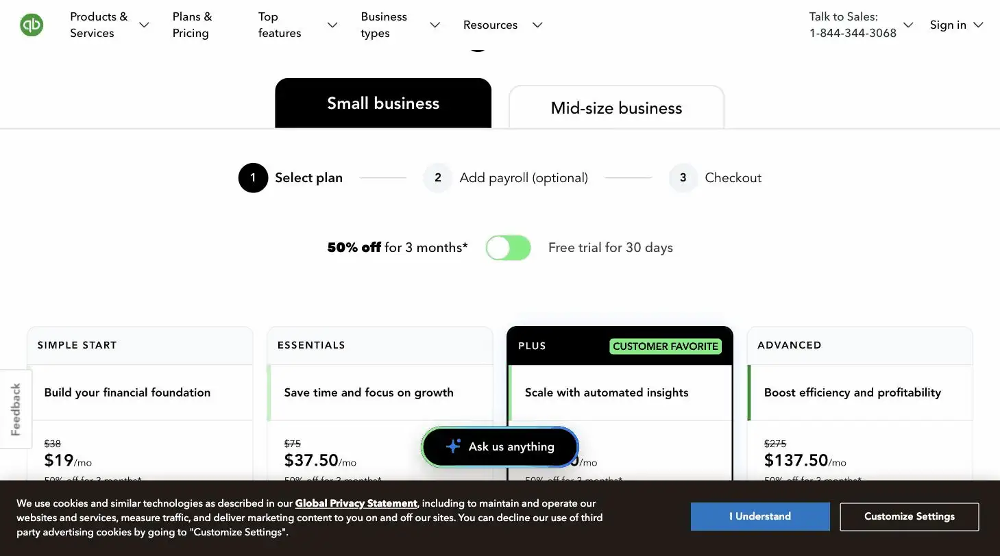
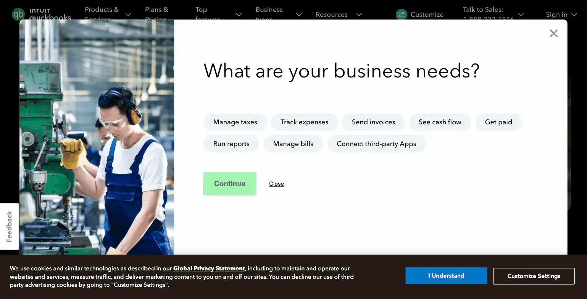

QuickBooks Solopreneur
It was finally built for a party of one, after years of ledgers pretending otherwise.
QuickBooks Solopreneur is Intuit's bookkeeping tier built specifically for one-person businesses filing a Schedule C, at $20/month or $120/year. Ranked #14 on Solos Gems (5.8/10), it's the most stripped-down QuickBooks tier, fine as a starter but expect to migrate up as your business grows.
QuickBooks Solopreneur is built specifically for one-person Schedule-C businesses, which is refreshing after years of enterprise software pretending it was built for you too.
- Value for price5.5/10
- Capability4.5/10
- Ease of use7/10
- Trial safety6.5/10

QuickBooks Solopreneur is Intuit's answer to the "I don't need full double-entry accounting, I just need to track income, expenses, and mileage for my taxes" problem. It's built specifically for one-person businesses filing a Schedule C, not scaled-down QuickBooks Online.

The Auto Bookkeeping card above shows income and expenses categorizing automatically as transactions come in. QuickBooks Solopreneur is purpose-built for one-person businesses, rather than being a stripped-down version of software meant for teams.
Example from quickbooks.intuit.com/solopreneur. Not independently tested by Solos Gems.Pricing breakdown
- Solopreneur: $20/month, or $120/year
- A 30-day free trial is typically available, and introductory discounts (around 50% off for the first few months) show up periodically: confirm current promos at signup, since they change often
What's included
Automated expense tracking (bank/card sync with categorization), basic invoicing, mileage tracking via GPS, and tax estimates/reporting aimed at Schedule-C filing. Intuit markets general AI-assisted features under the "Intuit Assist" name across its product line, but the specific AI capabilities included at the Solopreneur tier versus other QuickBooks plans aren't clearly broken out in Intuit's own materials as of this writing: worth confirming directly on their site rather than assuming parity with QuickBooks Online.
Where you'll outgrow it
Solopreneur is deliberately the most stripped-down tier in the QuickBooks lineup. It doesn't do full double-entry accounting or support more complex needs like inventory, multiple users, or contractor 1099 management at scale. The moment your business grows past a pure solo Schedule-C setup, hiring even one regular contractor, for instance, you're likely migrating to QuickBooks Online Simple Start or above, and that migration isn't seamless.
Pros
- Purpose-built for exactly the Schedule-C solo situation, not a cut-down enterprise tool
- Mileage tracking and tax estimates address two genuinely tedious solo-business tasks
- Cheaper entry point than the general QuickBooks Online plans
Cons
- No full double-entry accounting, a real limitation once your books get more complex
- Intuit's public documentation on which AI features are actually included at this tier is thin: verify before you buy expecting AI-driven bookkeeping specifically
- Migrating to a higher QuickBooks tier later isn't a simple one-click upgrade
Common questions
Does QuickBooks Solopreneur include full double-entry accounting?
No, that's a real limitation. It's the most stripped-down QuickBooks tier, fine for basic Schedule-C bookkeeping but not full double-entry accounting, expect to migrate to a higher tier once your books get more complex.
Are the AI features clearly documented?
Not really. Intuit's public documentation on which AI features are actually included at this tier is thin, verify current specifics before buying expecting AI-driven bookkeeping specifically, rather than assuming from the marketing.
Is upgrading to a higher QuickBooks tier easy later?
Not a simple one-click upgrade. Migrating your data to a higher tier takes real effort, worth considering upfront if you expect your business complexity to grow soon rather than starting on Solopreneur and migrating twice.